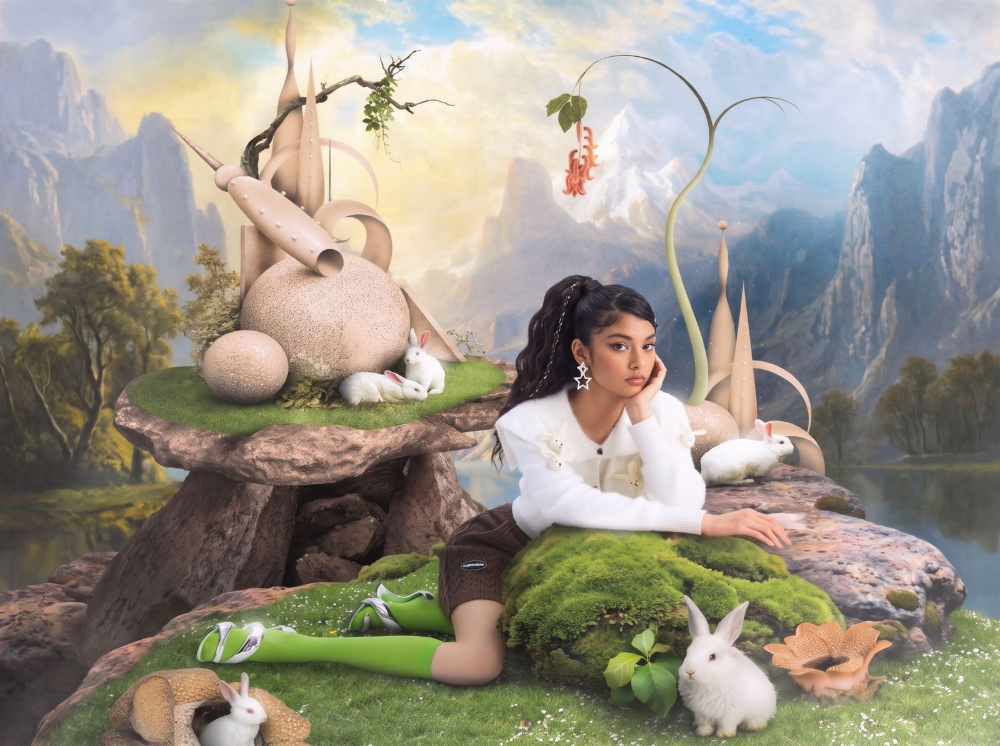

пример: референс настроения

пример: референс света

идеи и референсы
Midjourney
Midjourney берём, когда нужно найти настроение: свет, композицию, цветовую среду.
Он силён в эстетике, но плохо слушается буквальных инструкций: надписи и точные детали упаковки — не его территория.
Используйте его как источник референсов, а не как готовый кадр.